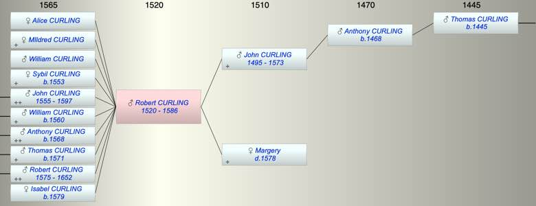

| [Index] |
| Robert CURLING (1520 - 1586) |
|  |
| b. abt 1520 at St Laurence |
| d. 1586 aged 66 |
| Parents: |
| John CURLING (1495 - 1573) |
| Margery ( - 1578) |
| Siblings (3): |
| Anthony CURLING (1522 - 1586) |
| William CURLING (1525 - 1582) |
| Sybil CURLING (1530 - ) |
| Grandchildren (22): |
| Nicholas CURLING (1576 - ), John CURLING (1578 - ), Alice CURLING (1580 - 1581), Alice CURLING (1584 - ), Mary CURLING (1587 - ), Elizabeth CURLING (1589 - ), Agnes CURLING (1592 - ), Mary CURLING (1592 - ), Robert CURLING (1583 - ), Stephen CURLING (1585 - ), Sybil CURLING (1587 - ), William CURLING (1589 - ), Anne CURLING (1608 - 1622), John CURLING (1596 - ), Susanna CURLING (1598 - ), William CURLING (1602 - ), Mary CURLING (1604 - ), Robert CURLING (1609 - ), William CURLING (1606 - 1668), Marion CURLING (1611 - ), Ann CURLING (1614 - ), Margery CURLING (1618 - ) |
| Events in Robert CURLING (1520 - 1586)'s life | |||||
| Date | Age | Event | Place | Notes | Src |
| abt 1520 | Robert CURLING was born | St Laurence | |||
| abt 1553 | 33 | Birth of daughter Sybil CURLING | |||
| abt 1555 | 35 | Birth of son John CURLING | |||
| abt 1560 | 40 | Birth of son William CURLING | |||
| 1568 | 48 | Birth of son Anthony CURLING | Note 1 | ||
| 1571 | 51 | Birth of son Thomas CURLING | bap St Peters 20 May 1571 | ||
| 1573 | 53 | Death of father John CURLING (aged 78) | St Laurence | not found | |
| abt 1575 | 55 | Birth of son Robert CURLING | |||
| 1578 | 58 | Death of mother Margery | St Laurence | bur 9 March 1578 at SL. | |
| 1579 | 59 | Birth of daughter Isabel CURLING | St Peters | ||
| 1586 | 66 | Robert CURLING died | Note 2 | ||
| Note 1: bap St Laurence 30 May 1568 ex MW |
| Note 2: buried 4 Sep 1586 at St P ex MW |
| Personal Notes: |
| Possible will 1586 |
| Created on a Mac™ using iFamily for Mac™ on 8 Oct 2023 |